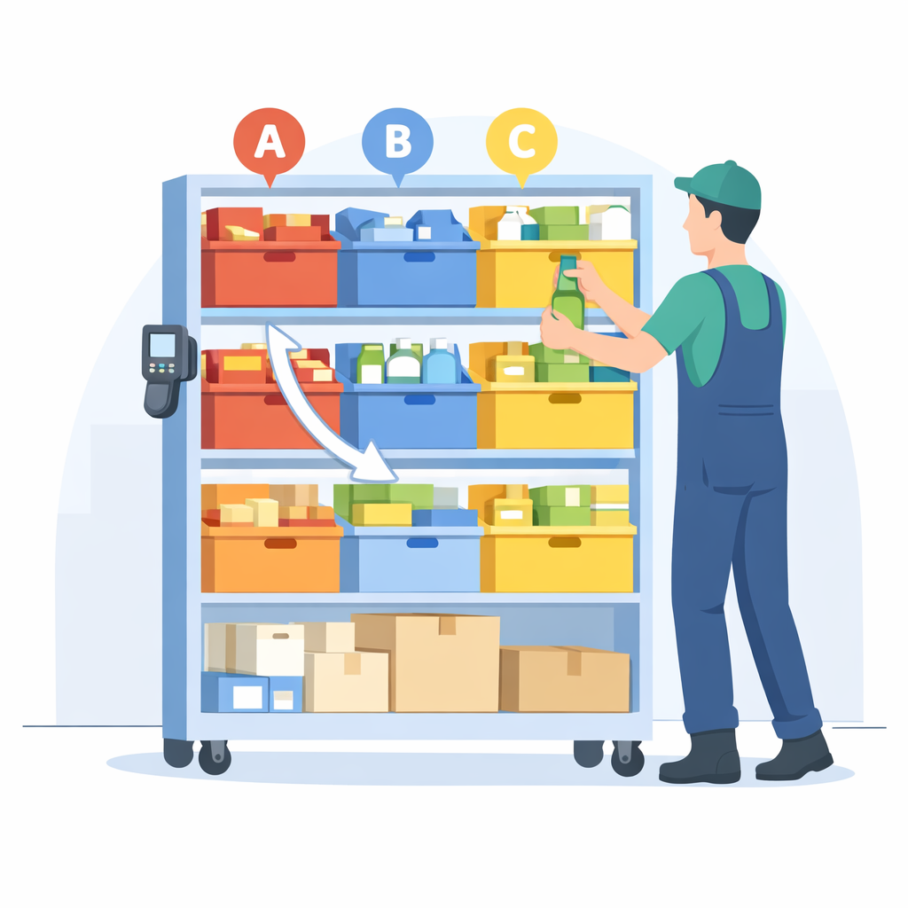

01
歩行ロス
ピッキングのたびに移動が発生し、作業時間の多くが“歩く時間”に使われている。
今のWMS運用を活かしながら、
トータル集荷＋棚整理＋視覚誘導で、歩行・探索・属人化を圧縮。
シェルフローは、DAS・ピッキングカートより柔軟で安価な棚型ピッキング支援システムです。
まずはオンラインで、生産性アップ効果と投資回収の目安を確認できます。
※現場条件に応じてご提案可能

ISSUES
複数商品を含む出荷が増えるほど、シングルピッキング中心の運用では
歩行・探索・確認・引継ぎといった工数が積み重なります。
ピッキングのたびに移動が発生し、作業時間の多くが“歩く時間”に使われている。
商品を探す時間が発生し、作業スピードと集中力を下げてしまう。
作業が属人化し、教育、引継ぎに時間がかかる。
確認工程が人依存になり、ミスが発生しやすい状態になる。
これらのロスは、人件費・教育負荷・処理能力・誤出荷リスクの悪化につながります。
SOLUTION
出荷工程を分けるだけで、歩行・探索・教育・ミスのムダは大きく減らせます。
シェルフローは、トータルピッキングとシングルピッキングの間に「整理の仕組み」を入れることで、
現場の工数構造そのものを見直します。
トータルピッキングで、複数オーダー分の商品をまとめて回収。
移動回数を減らし、歩く時間のムダを抑えます。

集めた商品を間口ごとに整理し、どこに何があるか分かる状態に。
探す時間を減らし、引き継ぎや教育もしやすくなります。
シングルピッキング時は、色と数量で取り出しを指示。
誰でも同じ手順で作業しやすく、ポカミスの防止につながります。
人を増やして吸収するのではなく、
出荷工程そのものを整理して、ムダを減らすという考え方です。
SIMULATOR
シェルフローは、導入前に効果を試算できることが特長です。
現場条件を入力するだけで、工数削減・人件費影響・投資回収目安を確認できます。
高額設備のように「導入してから考える」のではなく、
納得してから導入判断ができます。
COMPARISON
| シングル | DAS | カート | シェルフロー | |
|---|---|---|---|---|
| 初期コスト | ◎ほぼ不要 | △設備高額 | ○比較的安価 | ○低コスト導入 |
| 柔軟性 | ○人で対応 | △固定前提 | ○動かせる | ◎可動式 |
| 多品種対応 | △複雑化 | ○得意 | △探索あり | ◎整理で解決 |
| 導入スピード | ◎ | △長期 | ◎ | ◎約2週間〜 |
| 教育しやすさ | △属人化 | ○ | △ | ◎構造化 |
| 段階導入 | ◎ | △ | ◎ | ◎1台から可 |
柔軟だが属人化しやすく、工数が増えやすい
高速だが固定設備で柔軟性が低い
導入しやすいが探索ロスが残る
多品種対応と柔軟性のバランスに優れる
CASE STUDY
シェルフローは、現場ごとの出荷特性に合わせて改善ポイントが異なります。
ここでは、複数商品を含む出荷や繁忙期対応の現場で、どのような改善が見込めるかを例でご紹介します。
CASE 01
Before
1件ごとに商品を探しながら取り出す運用のため、 SKU数が増えるほど探索と移動の負荷が積み重なっていました。
After
トータルピッキング後に棚で整理することで、 探索ロスを抑え、誰でも同じ流れで取り出しやすい状態をつくれます。
CASE 02
Before
応援人員や経験の浅い作業者が増える時期は、 商品位置や取り方の判断が人依存になり、精度が安定しにくい状態でした。
After
色と数量で取り出しを誘導することで、 応援人員でも流れを理解しやすくなり、標準化しやすい運用に変わります。
現場条件に応じて、削減できる工数や効果の出方は異なります。
まずは無料シミュレーションで、自社現場での改善余地をご確認ください。
FEATURES
シェルフローは、多品種・複数SKU出荷の現場で起こりやすい 歩行・探索・教育・ミスのロスを減らすために、 必要な機能を現場に合わせて実装しています。
トータルピッキングでまとめて集めた商品を、間口ごとに整理して保持。 複数商品を含む出荷でも、移動回数を抑えながら後工程を進めやすくします。
移動ロスの削減
シングルピッキング時は、対象間口を色で分かりやすく表示し、 必要数量も明示。探す時間を減らし、迷いにくい流れをつくります。
探索ロスの削減
どこに何が入っているか、どの作業が進んでいるかを見える化。 紙や記憶に頼りにくくなり、教育・引き継ぎ・改善がしやすくなります。
教育負荷の削減
大がかりな固定設備を前提とせず、現場に合わせて小さく始めやすい構成です。 まずは一部工程から導入し、段階的に拡張していけます。
小規模導入が可能
JANベースの検品モードにも対応。ピッキング工程の中で照合強度を高められるため、 現場要件に応じて取り違いや見落としを抑えやすくなります。
ポカミスの削減
間口の分割や配置変更にも対応しやすく、現場条件に合わせた運用設計が可能です。 出荷以外の複数作業への転用も含めて、柔軟に使いやすい構成です。
複数作業に転用可能
シェルフローの考え方
人を増やして吸収するのではなく、
現場のロスを減らす機能で、出荷のやり方そのものを変えていきます。
PRICE
シェルフローは、大がかりな設備投資を前提としない中間自動化ソリューションです。
可動式で段階導入しやすく、現場条件に応じた導入設計が可能です。
提供セットアップ価格
※初期セットアップレンタル含む
1台の想定カバー範囲
標準は9間口構成。運用設計により、1台あたりの間口分割を活用しながら 小さく始めることができます。
小さく始める構成例
まずは1台・一部工程・一部商品群から開始し、 効果確認後に台数や対象範囲を広げる進め方が可能です。
WMS改修を前提にしない導入設計が可能です。
既存の出荷データレイアウトや現場運用に合わせて、無理のない構成を検討します。
FAQ
導入前によくいただくご質問をまとめました。
「まずは自社に合うか知りたい」という段階でも、お気軽にご確認ください。
はい。WMS改修を前提にしない導入設計が可能です。
既存の出荷データレイアウトや運用フローに合わせて、無理のない導入方法をご提案します。
運用設計によりますが、二重管理を前提にしない形で進められるよう調整します。
現場で必要なデータの持ち方や受け渡し方法を整理し、負担が増えにくい構成をご提案します。
シェルフローは、固定設備ほど重くなく、手作業より構造化できる中間の選択肢です。
DASのような固定化された仕組みほど大がかりではなく、一般的なピッキングカートよりも
「整理して見える化する工程」を持てる点が特長です。
特に、多品種・複数商品を含む出荷が一定量ある現場と相性が良いです。
小さく始める構成も可能なので、まずは一部工程・一部商品群から試し、
効果を見ながら広げていく進め方にも対応できます。
いきなり導入を前提に進めるのではなく、まずは現場条件の確認や改善余地の整理からご案内します。
「まずは情報収集したい」「シミュレーションだけ試したい」というご相談でも問題ありません。
はい、可能です。まずはオンラインで改善余地を試算し、そのうえで詳細相談に進む流れでも問題ありません。
導入前に効果の見通しを持てることも、シェルフローの特長のひとつです。
FLOW
まずは現状把握と簡易試算からお気軽にご相談ください。
「どれくらい改善の余地があるか」「自社に合うか」を判断いただくためのお手伝いをいたします。
出荷件数、取り扱い商品、現場レイアウト、現在の運用方法などを確認し、 改善余地のあるポイントを整理します。
現場条件に応じて、導入台数や運用イメージ、想定効果を整理し、 無理のない導入方法をご提案します。
いきなり本導入を前提にせず、必要に応じて詳細確認や短期レンタルなど、 現場に合った進め方をご相談いただけます。